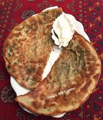

1- Mix flour and salt together. ...
2- Knead dough for 10 minutes.
3- Place dough in lightly oiled bowl, cover with a cloth, and let rest for one hour. ...
4- Scrub potatoes clean, place in a pot, cover by 2 inches with cold water, add a good pinch of salt, and bring to a boil over high heat.